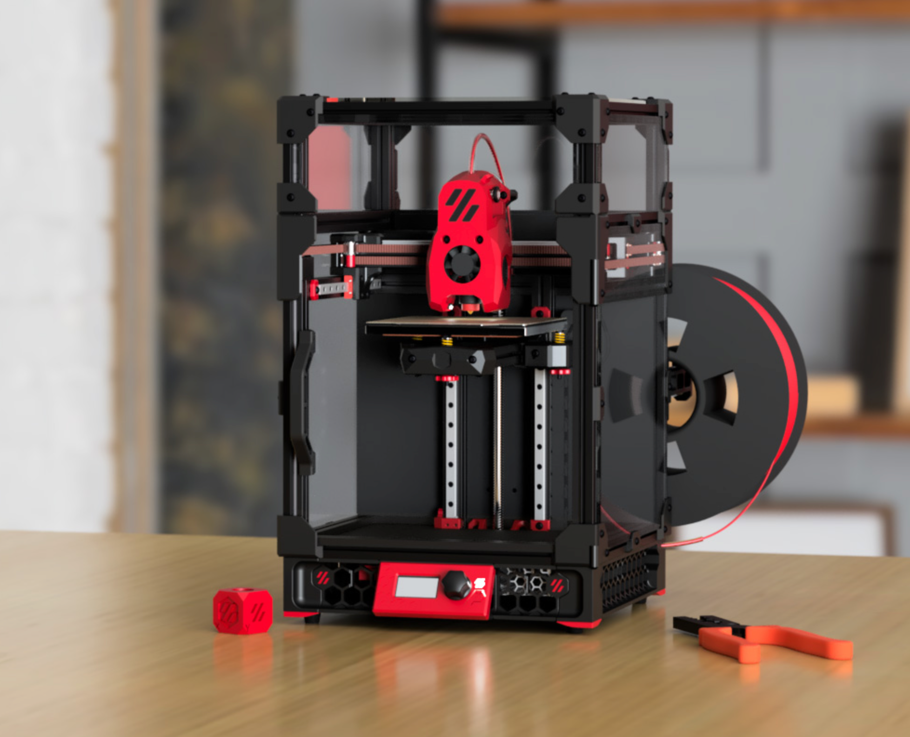

|
|
 |
|

|
| I am a third-year master's student pursuing a Master's degree in Forestry Engineering at Fujian Agriculture and Forestry University. I am also a member of the Vegetable Oil-based 3D Printing team led by Prof. Qiu Renhui. The research we are currently conducting includes vegetable oil-based 3D printing inks and accompanying light-cured 3D printing and Direct Ink Writing ( DIW ) 3D printing. My research interests include 3D Printing Ink, 3D Printer, and AI-assisted 3D Printing. Email / CV / Google Scholar / Github |
Education |
|
Fujian Agriculture and Forestry University MEng in Forestry Engineering Sep 2023 - Present You can write a brief description about your study or research focus here. |
|
Changzhou Institute of Technology B.S. in Civil Engineering Sep 2018 - Jun 2022 Graduated with honors. |
Research |

|
Vegetable Oil-based DIW 3D Printing Shijie Xu, Li Ying Hope is nature, 2025 [Research Page] / [Code] / [Paper] Unpublished research. |
Projects |
|  |
G-code project for DIW printer Shijie Xu Python, Code writing, 2025 - Present Compile G-code for DIW printers, using Python to generate or modify G-code recognizable by the printer, and use the G-code to control the dispensing machine. |